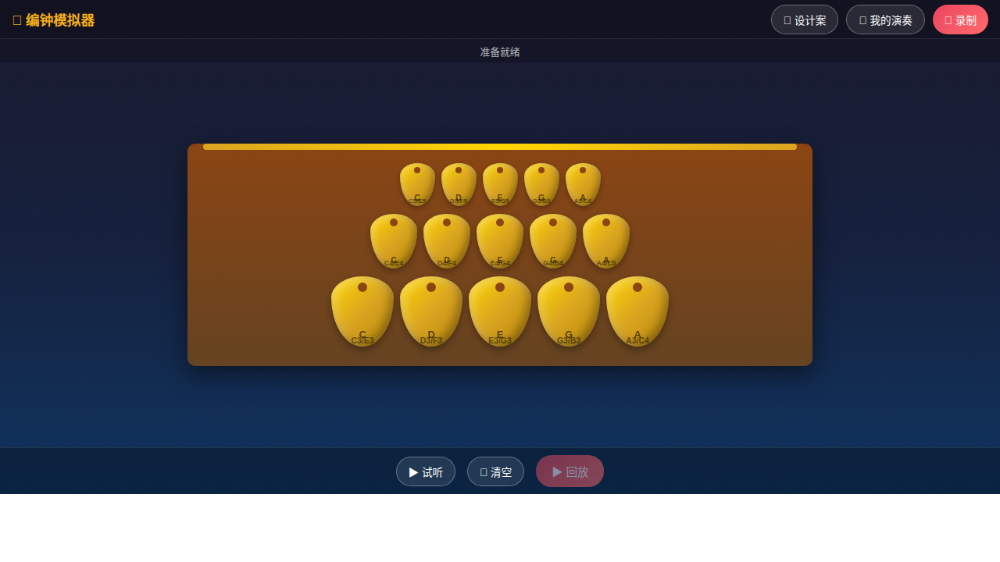

📋项目概述
"编钟模拟器是一款基于 Web Audio API 开发的交互式音乐体验应用，旨在还原中国古代曾侯乙编钟的独特音色与演奏方式，让用户能够在浏览器中体验这一世界级文化遗产的魅力。"
核心定位
编钟模拟器不是传统意义上的"游戏"，而是一个文化体验型音乐应用。核心价值在于：
- 文化传承 - 让现代人以互动方式接触和理解编钟这一古老乐器
- 音乐创作 - 提供录制和分享功能，鼓励用户创作原创音乐
- 教育科普 - 展示一钟双音的物理原理和音乐理论知识
灵感来源
设计参考对象：曾侯乙编钟（战国早期，1978年湖北随县出土）
| 参考维度 | 实现方式 |
|---|---|
| 音阶结构 | 采用五声音阶 (C-D-E-G-A) 对应宫商角徵羽 |
| 三排布局 | 上层小编钟（高音）、中层中编钟（中音）、下层大编钟（低音） |
| 一钟双音 | 每口钟可发出正鼓音和侧鼓音两个不同音高 |
| 铜器音色 | 使用 Web Audio API 合成带有金属谐波的钟声 |
🎯 设计目标
- 在移动端浏览器实现接近原生 App 的触控体验
- 准确还原编钟"一钟双音"的声学特性
- 提供完整的录制-回放-分享创作闭环
- 保持界面简洁优雅，突出编钟本身的美学
⚙️核心机制
一钟双音系统
这是编钟模拟器最核心的设计特色，也是曾侯乙编钟最神奇的声学特性。
🔵 正敲 (正鼓音)
敲击钟的正鼓部
C4
261.63 Hz
音高较低，音色浑厚
+3°
🔴 侧敲 (侧鼓音)
敲击钟的侧鼓部
E4
329.63 Hz
音高较高，音色清亮
每口编钟的两个音高相差大三度（约4个半音），这一特性使得仅15口钟就能覆盖30个不同音高，极大地扩展了音域。
音区架构
编钟按大小分为三排，对应高中低三个音区：
| 排层 | 钟大小 | 音区范围 | 数量 | 视觉设计 |
|---|---|---|---|---|
| 上层 | 小编钟 | C5 - A5 | 5口 | 尺寸最小，位置最高 |
| 中层 | 中编钟 | C4 - A4 | 5口 | 中等尺寸，中间位置 |
| 下层 | 大编钟 | C3 - A3 | 5口 | 尺寸最大，位置最低 |
总计：15口编钟 × 2音/钟 = 30个可用音高
音色合成原理
使用 Web Audio API 的振荡器节点合成编钟音色，包含三个层次：
🔊 音频架构
- 基频层 - 正弦波，基频
f，音量 0.6，3秒衰减 - 二次谐波 - 正弦波，频率
2f，音量 0.3，2.4秒衰减 - 三次谐波 - 三角波，频率
3f，音量 0.15，1.5秒衰减（提供金属感）
包络设计：Attack 20ms（快速起音）→ Decay 3s（长衰减）
这一设计模拟了铜钟被敲击后持续振动的物理特性
🎵音频系统
音频配置表
| 层级 | 音名 | 正敲频率 | 侧敲频率 | 波形类型 |
|---|---|---|---|---|
| 上层 (高音) | C5 | 523.25 Hz | 659.25 Hz | Sine + Triangle |
| D5 | 587.33 Hz | 698.46 Hz | Sine + Triangle | |
| E5 | 659.25 Hz | 783.99 Hz | Sine + Triangle | |
| G5 | 783.99 Hz | 987.77 Hz | Sine + Triangle | |
| A5 | 880.00 Hz | 1046.50 Hz | Sine + Triangle | |
| 中层 (中音) | C4 | 261.63 Hz | 329.63 Hz | Sine + Triangle |
| D4 | 293.66 Hz | 349.23 Hz | Sine + Triangle | |
| E4 | 329.63 Hz | 392.00 Hz | Sine + Triangle | |
| G4 | 392.00 Hz | 493.88 Hz | Sine + Triangle | |
| A4 | 440.00 Hz | 523.25 Hz | Sine + Triangle | |
| 下层 (低音) | C3 | 130.81 Hz | 164.81 Hz | Sine + Triangle |
| D3 | 146.83 Hz | 174.61 Hz | Sine + Triangle | |
| E3 | 164.81 Hz | 196.00 Hz | Sine + Triangle | |
| G3 | 196.00 Hz | 246.94 Hz | Sine + Triangle | |
| A3 | 220.00 Hz | 261.63 Hz | Sine + Triangle |
音频路由图
音频信号流
振荡器层
基频+谐波
→
基频+谐波
增益节点
ADSR包络
→
ADSR包络
主增益
Volume: 0.8
→
Volume: 0.8
音频输出
destination
destination
🎨UI/UE 设计
设计原则
- 沉浸优先 - 深色背景减少视觉干扰，突出金色编钟
- 横屏体验 - 强制横屏模式，模拟真实编钟的宽展布局
- 直观操作 - 无需教程，点击/触控即可发声
- 即时反馈 - 每次敲击都有视觉和听觉双重反馈
界面布局
实际界面截图

📍 UI 布局解说：
- 顶部工具栏 — 左侧应用名称与图标，右侧功能按钮（录制、我的演奏、设计案），采用悬浮透明背景避免遮挡主体
- 状态栏 — 实时显示系统状态和录制计时，录制时红色指示灯闪烁提供视觉反馈
- 编钟主体区 — 居中展示三排编钟，采用 Flexbox 垂直布局，钟架使用木质渐变增加层次感
- 底部控制栏 — 固定操作按钮（试听/清空/回放），采用圆角胶囊按钮符合移动端触控习惯
🎨 UE 设计亮点：
- 沉浸优先 — 深色渐变背景将视觉焦点完全引导至金色编钟，无多余装饰元素
- 直觉交互 — 编钟点击区域覆盖整个钟体，左右半区分别对应侧敲/正敲，无需文字说明
- 即时反馈 — 每次点击触发钟体摆动动画 + Toast 提示 + 音效，三重感官确认
- 横屏强制 — 竖屏时显示旋转提示，确保编钟的宽展布局得到最佳展示
界面结构示意图（从上到下）
┌─────────────────────────────────────┐
│ 🔧 工具栏 │ ← 标题 + 录制按钮
│ [🔔 编钟模拟器] [🔴 录制] │
├─────────────────────────────────────┤
│ 📊 状态栏 │ ← 状态提示 + 录制计时
│ ● 准备就绪 ⏱️ 00:00 │
├─────────────────────────────────────┤
│ │
│ 🏛️ 编钟区域 │ ← 核心交互区
│ ┌───────────────┐ │
│ │ ○ ○ ○ ○ ○ │ 上层(高音) │
│ │ ○ ○ ○ ○ ○ │ 中层(中音) │
│ │ ○ ○ ○ ○ ○ │ 下层(低音) │
│ └───────────────┘ │
│ │
├─────────────────────────────────────┤
│ 🎮 控制面板 │ ← 快捷操作
│ [▶️ 试听] [🗑️ 清空] [▶️ 回放] │
└─────────────────────────────────────┘色彩系统
| 元素 | 颜色 | 用途 |
|---|---|---|
| 背景 | #1a1a2e → #16213e → #0f3460 |
深蓝色渐变，营造庄重氛围 |
| 编钟 | #FFD700 → #DAA520 → #B8860B |
金色渐变，青铜质感 |
| 钟架 | #8B4513 → #654321 |
木质纹理 |
| 强调色 | #f5af19 |
标题、按钮、高亮 |
| 录制中 | #ff0000 |
闪烁动画表示录制状态 |
视觉反馈系统
| 操作 | 视觉反馈 | 动画效果 |
|---|---|---|
| 点击编钟 | 钟体摆动 | 0.3s 摇摆动画 (±5°) |
| 正敲/侧敲 | 击槌图标显示 | 锤击动画 + 位置提示 |
| 开始录制 | 录制按钮变红 + 脉冲动画 | 1s 闪烁周期 |
| Toast 提示 | 底部弹出提示 | 滑入滑出，2s 显示 |
👆核心交互逻辑
敲击检测机制
编钟采用点击位置判断来确定正敲或侧敲：
点击区域划分
┌─────────────────────────┐
│ 编钟钟体 │
│ ◄─────┼─────► │
│ 侧敲 │ 正敲 │
│ (左侧) │ (右侧) │
│ E4 │ C4 │
│ 高音 │ 低音 │
└─────────────────────────┘
判定逻辑：
if (点击位置.x < 钟体宽度 / 2) → 侧敲 (侧鼓音)
else → 正敲 (正鼓音)悬停提示：鼠标/手指悬停时显示"正"和"侧"字样，帮助用户理解交互方式。
手势支持
| 手势 | 对应操作 | 触发方式 |
|---|---|---|
| 点击 / 触摸 | 敲击编钟 | click / touchstart |
| 横滑 | 快速连续敲击 | 多点触控支持 |
注意：为防止误触，-webkit-tap-highlight-color 设置为透明，消除移动端点击高亮。
屏幕方向处理
📱 横屏强制
编钟的布局天生适合横屏展示。当检测到竖屏时：
- 显示旋转提示："请横屏使用编钟模拟器"
- 隐藏主应用界面
- 提供视觉引导动画（手机旋转图标）
实现：@media screen and (orientation: portrait) CSS 媒体查询
⏺️录制与回放系统
数据结构设计
Recording 对象结构
{
id: 1709999999999, // 时间戳作为唯一ID
name: "演奏 1", // 用户可编辑名称
date: "2026/3/11 10:30:00", // 录制日期时间
duration: "45.2", // 演奏时长（秒）
notes: [ // 音符数组
{
note: "C4", // 音名
freq: 261.63, // 频率
isSide: false, // 是否侧敲
time: 0 // 相对开始的时间戳(ms)
},
{
note: "E4",
freq: 329.63,
isSide: true,
time: 850
},
// ...
]
}录制流程
点击录制
→
初始化音频
→
开始计时
→
记录每次敲击
时间+音高+方式
→
时间+音高+方式
停止录制
→
保存到 LocalStorage
回放机制
回放使用 setTimeout 按照录制时的时间戳精确触发每个音符：
recording.notes.forEach((noteData) => {
setTimeout(() => {
playBellSound(noteData.freq);
}, noteData.time);
});特点：
- 非音频文件录制，数据体积极小
- 可精确还原演奏时机
- 支持任意速度回放（可扩展变速功能）
分享功能
| 分享方式 | 实现方式 | 数据格式 |
|---|---|---|
| 链接分享 | Base64 编码 + URL 参数 | ?share=eyJuYW1lIjo... |
| 图片卡片 | Canvas 绘制 + 下载 | PNG 图片 |
| 数据导出 | Blob + 文件下载 | JSON 文件 |
存储方案
💾 LocalStorage 持久化
- 键名:
bianzhong_recordings - 格式: JSON 字符串
- 容量: 浏览器限制约 5-10MB
- 数据量估算: 一首30秒的演奏约 500 个音符 ≈ 10KB
- 理论容量: 约 500-1000 首演奏
💻技术实现
技术栈
| 类别 | 技术 | 版本/说明 |
|---|---|---|
| 核心 API | Web Audio API | 原生浏览器支持 |
| 存储 | localStorage | 录制数据持久化 |
| 绘图 | Canvas API | 分享卡片生成 |
| 样式 | CSS3 | Flexbox + 渐变 + 动画 |
| 框架 | 无 | 纯原生实现 |
浏览器兼容性
| 浏览器 | 支持情况 | 备注 |
|---|---|---|
| Chrome / Edge | 完全支持 | 推荐 |
| Firefox | 完全支持 | - |
| Safari | 完全支持 | iOS 需用户交互激活音频 |
| 微信内置浏览器 | 部分支持 | 可能有自动播放限制 |
音频自动播放策略
现代浏览器对自动播放有严格限制，采用以下策略处理：
function initAudio() {
if (!audioContext) {
audioContext = new (window.AudioContext || window.webkitAudioContext)();
masterGain = audioContext.createGain();
masterGain.gain.value = 0.8;
masterGain.connect(audioContext.destination);
}
// 处理暂停状态（iOS Safari 需要）
if (audioContext.state === 'suspended') {
audioContext.resume();
}
}
// 在用户首次点击/触摸时初始化
bell.addEventListener('click', () => {
initAudio(); // 确保音频上下文已激活
playBellSound(freq);
});🗺️开发路线图
已实现功能 已完成
- 核心 一钟双音系统（正敲/侧敲）
- 核心 三排15口编钟音阶布局
- 核心 Web Audio API 音色合成
- UI 响应式横屏布局
- UI 编钟摆动动画
- 技术 录制与回放系统
- 技术 LocalStorage 持久化存储
- 技术 分享链接生成
- 技术 分享卡片生成（Canvas）
- 技术 数据导出为 JSON
未来可扩展功能
| 功能 | 优先级 | 说明 |
|---|---|---|
| 更多编钟数量 | P1 | 增加至 21 口或 25 口，扩展音域 |
| 节拍器 | P1 | 辅助演奏者保持节奏 |
| 录音重命名 | P2 | 支持自定义演奏名称 |
| 变速回放 | P2 | 0.5x - 2x 速度调节 |
| 音轨叠加 | P2 | 多轨录制，类似 Overdub |
| 教程模式 | P3 | 引导新手学习演奏简单曲目 |
| 云端存储 | P3 | 用户账号系统，跨设备同步 |
📎附录
参考资源
- 曾侯乙编钟 - 湖北省博物馆
- Web Audio API 规范 - W3C
- 《中国古代音乐史稿》杨荫浏